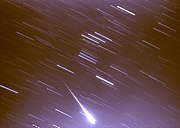

SJAA
Ephemeris
|
SJAA Ephemeris |
Meteor Watch
|
Of course, as I type this I have no idea how the Leonid watching went; deadline for the column is before that. But I hope it went well.
For Christmas, we have a couple of good meteor events if you didn't get the "perfect scope" under the tree: meteors just require eyes...
First up is the Geminids, with high rates and reliability from year to year: this is the shower of choice for veteran meteor observers.
They are usually the strongest shower of the year, producing over 100 meteors per hour centered on the morning of Dec. 13/14.
The Geminids are visible for one week prior to maximum, but the great majority of activity is limited to December 12/13 and 13/14. This shower produces many bright meteors, but persistent trains are rare.
Luckily The 1999 Geminids will not be plagued by harsh moonlight. The moon will set by about 22h-23h local time on peak nite leaving the 2nd and best half of the night for ideal viewing.
Most activity will occur after midnight.
The shower must be expected to peak near 2 a.m. local time. Fireball activity should be very high this year.
The parent object of the Geminids was unknown until recently. The Asteroid 3200 Phaethon, discovered by IRAS (Infrared Astronomical Satellite) in 1983, is now known to be the source of the Geminid meteors.
It is apparently the only non-cometary object associated with the evolution of a major annual stream.
Next up are the Ursids, visible for one week prior to Christmas.
Although the radiant is circumpolar for most Northern Hemisphere locations, activity will mainly be noted after mid-night on the morning of Dec. 21/22.
The best time is usually near 3 am local till dawn.
This years Ursids will be a major washout due to a Full Moon. If you feel compelled to watch under these conditions, face North.
Expect to see about 3 - 5/hour at best.
The shower must be expected to peak near 6 am local time to see the best activity.
The parent comet source of this shower is Comet 8p/Tuttle that last reached perihelion in 1994. A short but strong display has been seen three times while Comet Tuttle was near aphelion.
The last burst of activity occurred in 1986. The year 2000 may provide the next possible strong display of Ursid Meteors... but this year? Probably not much.
|  |
| David North; last updated: February 05, 2002 | Prev Next |